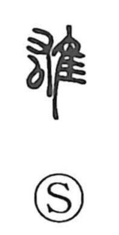

雄

Kun: osu, ooshii | On: yuu
male ・ manly ・ heroic ・ vigorous
Explanation
A phono-semantic compound: in older forms the left component is 右, used for its sound yuu, while the right component 隹 is the small-bird graph that gives the meaning. Han-period inscriptions often show the layout explicitly as 右 on the left with 隹 on the right. The Shuowen glosses it as the “father-bird,” that is, the male of birds, and from this core sense the character naturally came to express masculine strength and heroic vigor. Hence its use in contrasts such as 雌雄 for female and male birds (with 牝牡 reserved for quadrupeds), and in compounds praising manly courage and grandeur.